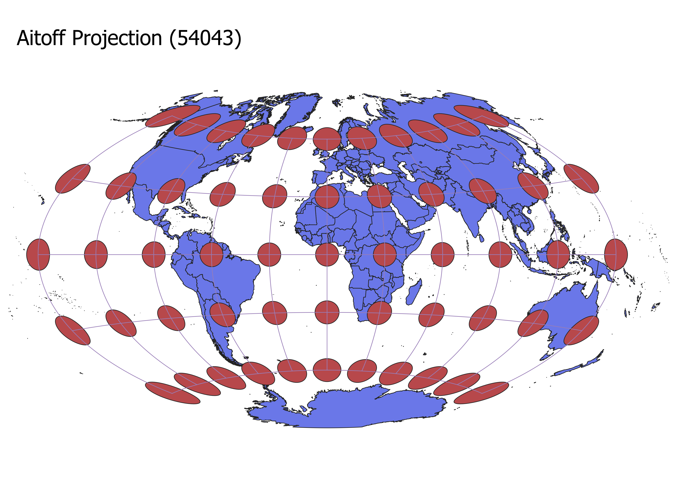

Homework 3
Zack M.
To illustrate various map projections in QGIS, I utilized the Indicatrix plugin to overlay circles on the map,
highlighting distortion effectively. In the bottom-right corner of QGIS, I searched and selected the desired
projections. After setting them, I designed new print layouts and stored the maps with different projections as PNG files on GitHub.
WGS84 (4326) Projection
A cylindrical mapping where lines intersect at right angles and run parallel. Distortion grows
as one approaches the poles and diminishes nearer to the equator.
Aitoff (54043) Projection
This model showcases curved lines with increased distortion closer to the poles.

Pseudo-Mercator (3857) Projection
Resembles the WGS84 but has a slimmer appearance.
Sphere Winkel (53018) Projection
A spherical representation where distortion intensifies near the poles and reduces towards the equator.

Cylindrical (54034) Projection
A cylindrical model where the north and south poles appear notably compressed. The poles experience heightened distortion.

Conic (54027) Projection
Envision a cone enveloping the Earth, and then unfolding it to get this conic projection. Maximum distortion is
observed towards the map's southern end, with right angles throughout.

Azimuthal (102016) Projection
An azimuthal model maps Earth's surface onto a flat plane. It maintains angles akin to a conic projection.

Quartic (53022) Projection
The quartic projection is an equal-area projection. This ensures uniform
distortion across shapes, directions, angles, and distances.

Robinson (54030) Projection
This is a Robinson projection and it features curves that bend inward toward the central meridian..

Data for Homework 1
Natural Earth Files